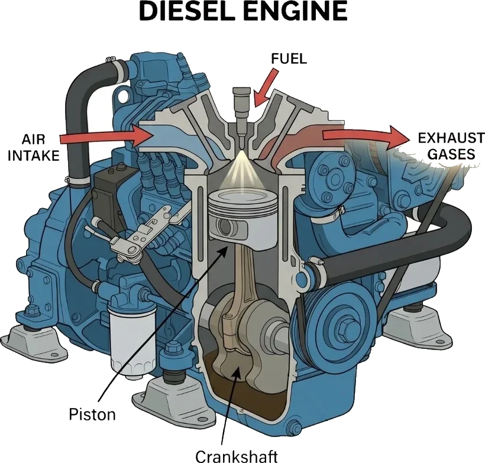
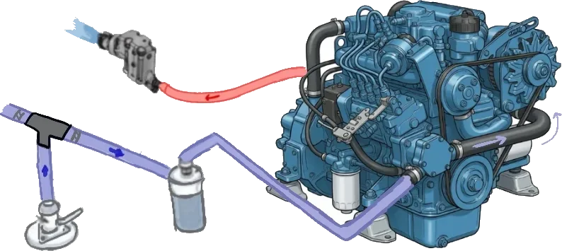

I know what you're thinking. An article about engines on a sailing website? Isn't the whole point that you don't use an engine? And yes, in theory, you're right. In practice, your engine is the thing that gets you out of the marina, charges your batteries so the instruments work, and - on the really bad days - gets you home when everything else has gone sideways.
I'm definitely not a mechanic. But I've spent my fair share of time trying to understand how everything works and what the different components do. I've found the best way to start is focusing on the basics, what's needed to keep it running, how to spot when something's wrong, and how not to make things worse while you figure it out.
1. Why sailors need to understand their engine
Here's the uncomfortable truth: your engine is the most critical piece of safety equipment on the boat. Not the liferaft, not the EPIRB - the engine. Because unless the boat is sinking, the engine is what you use to avoid needing those other things.
The boats that get into trouble offshore aren't usually the ones with broken masts. They're the ones with engines that won't start when it matters. So let's talk about how the thing actually works.
2. The four-stroke diesel cycle (simplified)
Most sailing boats run marine diesel engines. Ours on Employment Hero Alliance is a Nanni 2.10 - a reliable, compact, easy-to-maintain engine.
The diesel engine runs on a four-stroke cycle. Four strokes, four things happen:
Intake: the piston moves down, drawing air into the cylinder. Just air - no fuel yet. This is the big difference from a petrol engine, which sucks in a fuel-air mixture.
Compression: the piston moves back up and compresses that air to roughly 20:1. This is aggressive compression. The air gets so hot from being squeezed - around 500°C - that it will ignite diesel fuel on contact. No spark plug needed.
Power: at the top of the compression stroke, diesel fuel is injected directly into the cylinder. It hits the superheated air and ignites immediately. The expanding gases shove the piston back down. This is the stroke that actually produces power.
Exhaust: the piston comes back up one last time, pushing the burnt gases out through the exhaust valve and out of the boat (mixed with cooling water, which is why your exhaust burbles).
The whole thing repeats thousands of times per minute, turning a crankshaft, which turns your propeller shaft, which turns the propeller. Mechanical elegance, really.

3. The cooling system
This is where marine engines diverge from car engines, and it's where most people's understanding gets hazy. Your car engine is cooled by air flowing over a radiator. Your boat engine is cooled by the ocean. But not directly - because pumping corrosive salt water through your engine block would destroy it in a season.
Instead, most marine diesels use a two-circuit cooling system:
The freshwater circuit is a closed loop of coolant (basically the same antifreeze you'd put in a car) that circulates through the engine block, absorbing heat. This coolant never leaves the system - it just goes round and round.
The raw water circuit sucks in seawater through a through-hull fitting, pumps it through a heat exchanger (a bundle of small tubes where the hot freshwater coolant transfers its heat to the cold seawater), and then pushes the now-warm seawater out through the exhaust.

The heat exchanger is the clever bit. It lets the seawater cool the engine without the seawater ever touching the engine internals. The raw water side will eventually corrode and need servicing - that's the sacrificial part of the system. The engine block stays clean.
The component that makes the raw water circuit work is the impeller - a little rubber paddle wheel inside the raw water pump. It's also the component most likely to fail, because rubber doesn't love being spun at high speed in salt water. The raw water filter basket is also a key component of making sure enough seawater flows through the system. Keeping this clean and functioning properly is essential for engine longevity.
4. The fuel system
Diesel fuel systems are beautifully simple in concept and infuriatingly fiddly when they go wrong. The basic path is: fuel tank → primary filter (with water separator) → lift pump → secondary filter → injection pump → injectors → cylinders.
Three things go wrong with fuel systems on boats. Three things, reliably, every time.
Diesel bug. This is a microorganism that grows in the boundary between diesel fuel and any water that's condensed in your tank. It forms a dark, slimy gunk that clogs your filters and starves the engine of fuel. It loves warmth, it loves condensation, and it loves boats that sit unused for weeks between sails. The fix is preventive: keep your tank full (less air means less condensation), use a biocide additive, and change your primary filter regularly.
Water in the fuel. Related to diesel bug, but also its own problem. Water gets into diesel tanks through condensation, dodgy fuel from marina pumps, and failing deck fills. Your primary filter should have a water separator bowl - check it regularly and drain off any water you see.
Air in the fuel lines. Diesel engines cannot tolerate air in the fuel system. If air gets in - because you ran the tank dry, changed a filter, or have a loose connection - the engine will splutter, lose power, and eventually stop. Getting the air out is called bleeding the fuel system, and it's one of those jobs that's easy once you've done it and mystifying the first time. Every engine is slightly different, but the principle is the same: open a bleed point, pump fuel through until no more bubbles come out, close it up.
Quick reference: fuel system health
- Diesel bug - keep tank full, add biocide, change filters every 200 hours or annually.
- Water in fuel - check the water separator bowl regularly. Drain if cloudy.
- Air in lines - learn your engine's bleed procedure before you need it. Practise at the dock.
- Filter changes - carry spare filters. Always.
5. Common problems and the pre-race checklist
Before any offshore race, we go through the engine systematically. Not because we expect to motor during the race (we don't, and the race rules usually prohibit it), but because when the race is over and we need to get into port, or if something goes seriously wrong and we need to retire, the engine must start. First time, every time.
Here's what we check:
Impeller. The rubber impeller in the raw water pump is the most common point of failure on a marine diesel. The vanes crack, break off, and get swept downstream into the heat exchanger where they cause blockages. If your engine overheats, the impeller is the first thing to check.
Belts. The alternator belt charges your batteries. The raw water pump might run off a belt too, depending on your engine. Check for cracks, glazing, and correct tension - you should be able to deflect the belt about 10mm with your thumb.
Oil. Check the level (dipstick, engine cold) and the colour. Fresh oil is amber. Oil that's been in too long turns black and gritty. It's recommended to change the oil and oil filter every 100 hours.
Coolant. Check the level in the header tank (engine cold - never open it hot). The coolant should be clean and the right colour for your antifreeze type. If you're topping up frequently, you have a leak somewhere.
Exhaust water flow. Every time you start the engine, look over the stern. You should see a steady flow of water coming out of the exhaust. No water means the raw water circuit isn't working - probably the impeller, possibly a blocked intake or a closed seacock. Shut the engine down immediately. Running a diesel without cooling water will overheat the engine in minutes and the repair bill will make you want to take up golf.